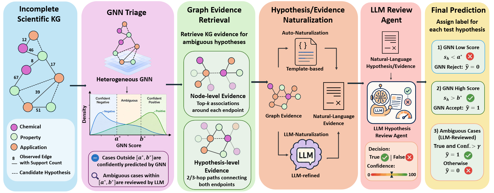
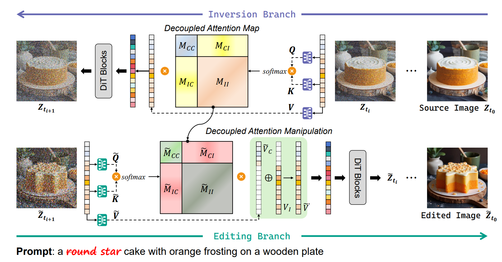
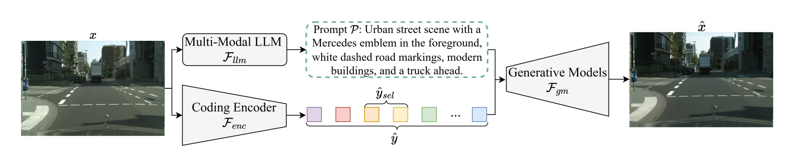
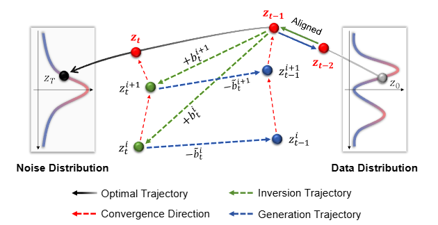

Zhihan Zhu 朱旨函 (Zhihan Zhu)
Dept. of Electronic and Electrical Engineering
Southern University of Science and Technology (SUSTech)
Email: zhuzh2023 [at] mail.sustech.edu.cn
I am a third-year undergraduate at the Artificial Intelligence Lab of SUSTech, advised by Prof. Zhihai He (IEEE Fellow). My research focuses on Generative AI, particularly Diffusion Models and Flow Matching. I am also broadly interested in Multimodal Large Language Models, LLM Agents, and Long-Video Understanding and Visual Memory.
My long-term goal is to develop unified visual models that integrate visual understanding and generation within a single framework.
我是南方科技大学人工智能实验室的大三本科生，导师为 何志海教授（IEEE Fellow）。我的研究方向聚焦于 Generative AI，特别是 Diffusion Models 与 Flow Matching。我同时对 多模态大语言模型 (MLLMs)、LLM Agents，以及 长视频理解与视觉记忆 等方向充满兴趣。
我的长期研究目标是构建兼具视觉理解与生成能力的统一视觉模型。

Education 教育经历
-
Sept. 2023 – Expected June 2027
Southern University of Science and Technology (SUSTech)
B.S. in Information Engineering 信息工程 工学学士
GPA: 3.86/4.00
Publications 论文

HyGRAIL: Cost-Aware and Evidence-Grounded Scientific Hypothesis Discovery over Knowledge Graphs

Runge-Kutta Approximation and Decoupled Attention for Rectified Flow Inversion and Semantic Editing

Generative Semantic Coding for Ultra-Low Bitrate Visual Communication and Analysis

Latent Bias Alignment for High-Fidelity Diffusion Inversion in Real-World Image Reconstruction and Manipulation
Patents 发明专利
- Zhihai He, Weiming Chen, Zhihan Zhu, Yijia Wang, Jian Ouyang. "Image Editing Method Based on Attention Decoupling, Device, Terminal and Storage Medium." "基于注意力解耦的图像编辑方法、装置、终端及存储介质。" (CN 202511281645.1, accepted by CNIPA)
- Zhihai He, Weiming Chen, Yijia Wang, Zhihan Zhu. "Template-Replacement Image Compression & Reconstruction Method, System and Storage Medium." "基于模板替换的图像压缩与重建方法、系统及存储介质。" (CN 202511281423.X, accepted by CNIPA)
Honors & Awards 荣誉与奖项
- 2025 Gold Award (Guangdong Provincial Level, Top 0.02%), “Yunjing Zhiyu” – Intelligent Aquaculture System, China International College Students’ Innovation Competition 省金奖（广东赛区，前 0.02%），"云鲸智渔" 智能水产养殖系统，中国国际大学生创新大赛
- 2024, 2025 Outstanding Student, SUSTech 优秀学生，南方科技大学
- 2024–2025 Second-Class Scholarship for Academic Excellence, SUSTech 二等奖学金（学业优秀），南方科技大学
- 6th Place, Men’s 400m, 9th SUSTech Athletics Games 第六名，男子 400 米，南方科技大学第九届田径运动会
Technical Skills 技术能力
Deep Learning: PyTorch, Hugging Face Diffusers, Stable Diffusion, FLUX, SDXL, DiT, ControlNet, VAE, GNNs, vLLM, verl, LLM/MLLM pipelines
Systems: Linux, Git, CUDA, HPC/LSF, Multi-GPU Training, LaTeX
Languages: Chinese (native), English (IELTS 6.5)